1Premier démarrage
À la première ouverture, choisissez la langue et la façon de commencer :
- Commencer à vide : pour un nouvel établissement. C'est ce que nous ferons dans ce guide.
- Commencer avec un exemple : un bar fictif pour tout essayer sans crainte. Vous pourrez l'effacer ensuite dans Réglages.
- Importer les données de Raconet : n'apparaît que si le programme trouve Raconet Gastronomia ou Xoriguer TPV sur cet ordinateur.
- Ouvrir une sauvegarde : si vous avez déjà un fichier .json exporté.
💡 Tout est enregistré automatiquement à chaque modification. Pas besoin de chercher un bouton Enregistrer.
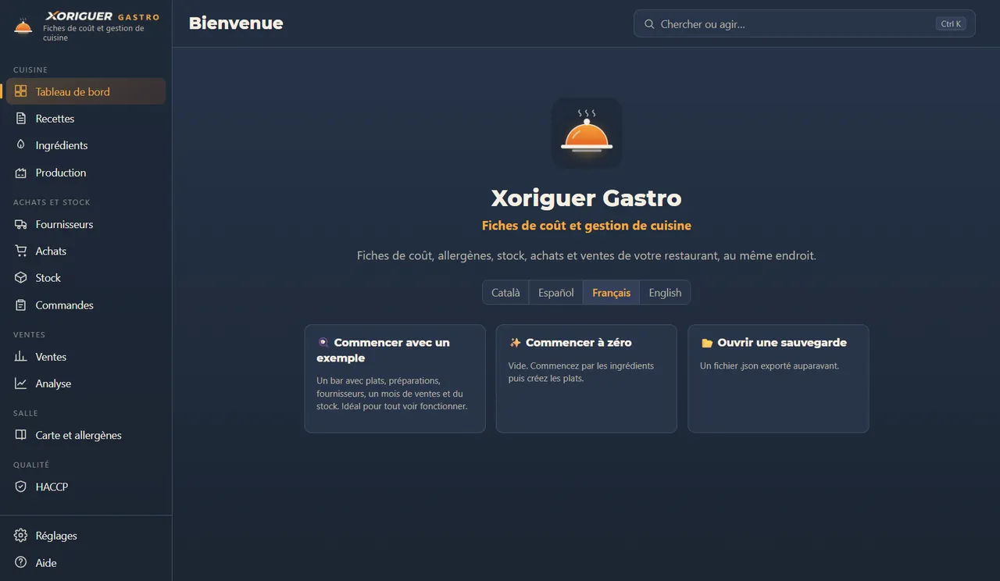
2Les informations de l'établissement
Allez dans Réglages et remplissez :
- Nom, adresse et téléphone : ils apparaissent sur la carte, les fiches et les étiquettes.
- TVA par défaut (10 % en restauration en Espagne) et la devise.
- Marge visée par catégorie : la marge brute souhaitée pour les tapas, sandwichs, desserts… Le programme vous dira si chaque plat l'atteint et à quel prix il faudrait le vendre.
- Jours de conservation par défaut des étiquettes de production.
💡 Les marges se calculent sur le prix hors TVA, ce qui rentre vraiment dans la caisse.
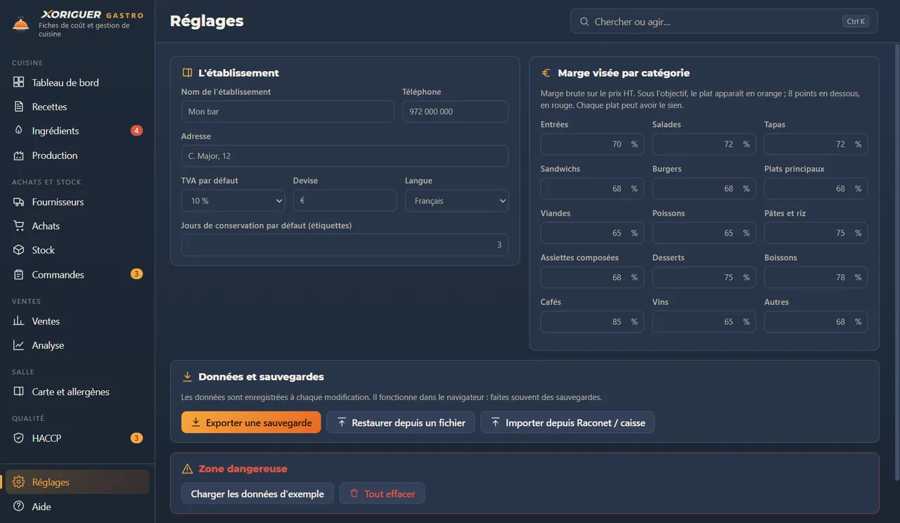
3Les fournisseurs
Dans Fournisseurs, créez-en un par entreprise qui vous livre : nom, téléphone (pour WhatsApp), e-mail, contact, jours de livraison et minimum de commande.
Vous les associerez ensuite aux ingrédients et les commandes seront regroupées par fournisseur, prêtes à envoyer.
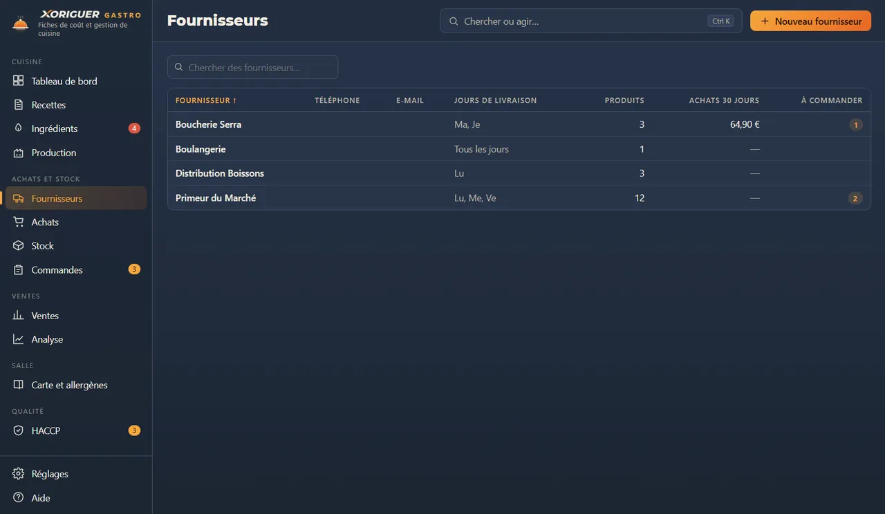
4Les ingrédients : partez de la base
Dans Ingrédients → Ajouter depuis la base, plus de 120 produits courants avec la famille, le rendement, les allergènes, la nutrition et un prix indicatif déjà renseignés. Cochez ceux que vous utilisez et cliquez sur Ajouter.
- Ceux que vous avez déjà apparaissent en gris (« déjà présent ») : pas de doublons.
- Vous pouvez aussi importer un CSV du tarif fournisseur, ou les créer un par un avec Nouvel ingrédient (ou la touche N).
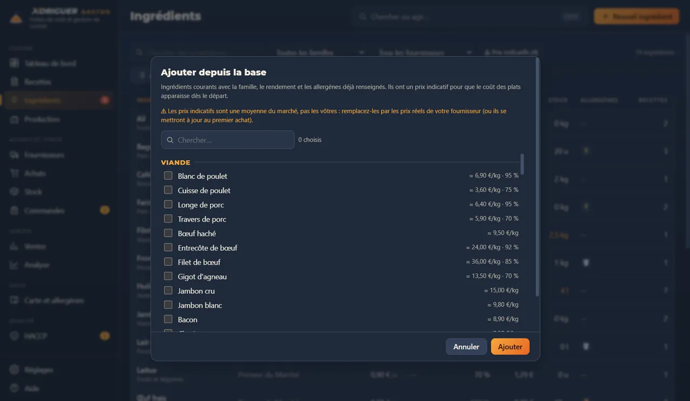
5Indiquez les prix
Cliquez sur chaque ingrédient pour ouvrir sa fiche à droite :
- Unité et prix HT (€/kg, €/l ou €/unité). Si vous achetez par carton, le calculateur de conditionnement le convertit en prix au kg.
- Rendement : la part utilisable après épluchage ou nettoyage (pomme de terre ≈ 80 %, merlu ≈ 55 %). Le prix réel s'ajuste tout seul.
- Poids d'une pièce (facultatif) : pour écrire « 2 u » dans les recettes d'un produit acheté au kg.
- Fournisseur, où il est rangé (chambre froide, congélateur…) et stock mini/maxi pour les commandes automatiques.
- Prix par fournisseur : chaque bon de livraison enregistre le prix ; si un autre fournisseur est moins cher, le tableau de bord vous prévient.
💡 Les prix de la base sont indicatifs (une moyenne du marché) et apparaissent en orange avec l'étiquette « indicatif ». Remplacez-les par les prix réels de votre fournisseur : le filtre ⚠ Prix indicatifs de la liste les regroupe. Si le prix est bon, cliquez sur Le prix est correct. Le premier achat de chaque produit le met aussi à jour.
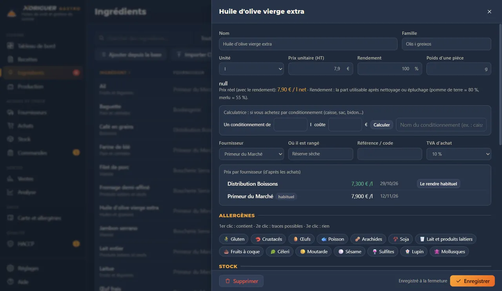
6Les plats : ajoutez-les depuis la base
Dans Recettes → Ajouter depuis la base, environ 70 plats, préparations (sauce brava, aïoli, béchamel, sofrito…) et articles de bar avec la fiche de coût par portion.
- Vos ingrédients sont réutilisés s'ils existent déjà (même dans une autre langue) et ceux qui manquent sont créés.
- Les préparations incluses sont ajoutées automatiquement : en choisissant des patatas bravas, vous aurez aussi la sauce brava.
- Le coût vient de vos prix et se recalcule tout seul dès que vous en modifiez un, y compris dans les préparations.
💡 Attention : tant que des ingrédients ont un prix indicatif, le plat est marqué ≈ avec un avertissement, et son coût et sa marge ne sont pas réels. Saisissez les prix de votre fournisseur et tout se recalcule. Vérifiez aussi les quantités et adaptez-les à vos portions.
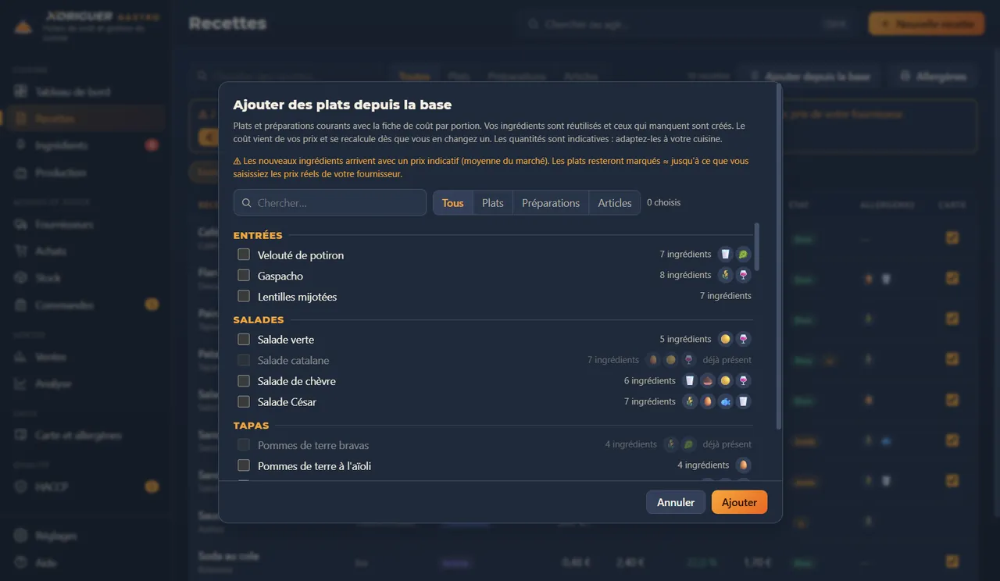
7La fiche de coût de chaque plat
Ouvrez un plat pour voir et ajuster sa fiche :
- Ajoutez des ingrédients ou des préparations en tapant leur nom ; indiquez la quantité par portion dans n'importe quelle unité (g, kg, ml, l, u). S'il n'existe pas, créez-le sur place.
- En bas : le coût par portion, le food cost (vert : bien, orange : juste, rouge : insuffisant) et la marge.
- Saisissez le prix TTC ou cliquez sur le prix conseillé pour atteindre la marge visée.
- Tailles de portion : tapa, demi, double… chacune avec son prix et sa marge.
- Poste (cuisine froide, chaude, friteuse, bar) : organise la feuille de production.
- Onglets : Préparation (étapes, photo, description pour la carte), Allergènes et nutrition (calculés automatiquement) et Produire (adapter à N portions).
- Fiche technique imprimable, avec ou sans coûts.
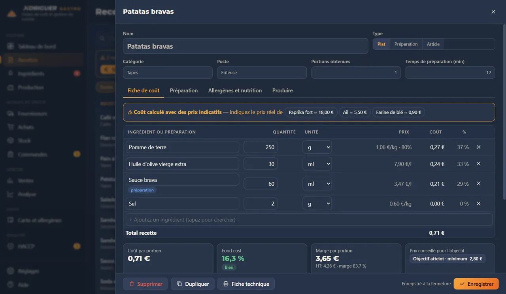
8La liste des recettes
La liste montre d'un coup d'œil le coût, le prix, le food cost, la marge, l'état et les allergènes de chaque plat. Cliquez sur une colonne pour trier (par exemple par food cost, pour repérer les plats les moins rentables).
Filtrez par plats, préparations ou articles, et par catégorie. La case Carte détermine si le plat figure sur la carte imprimée et numérique.
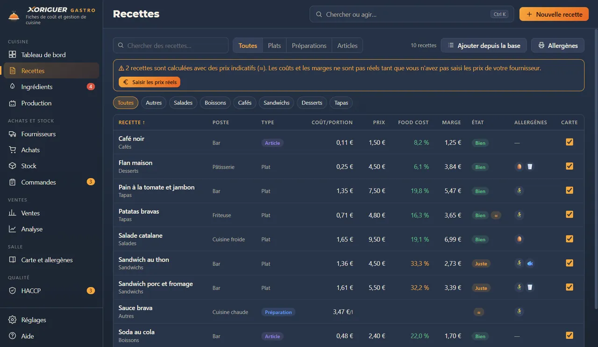
9Le premier inventaire
Dans Stock → Faire l'inventaire, comptez ce que vous avez et saisissez-le (Entrée passe au suivant). Vous pouvez le trier par zone (chambre froide, congélateur, réserve) pour suivre votre parcours, ou imprimer la feuille de comptage.
En enregistrant, le stock prend les valeurs comptées. Faites-en un en début et un en fin de mois : dans Analyse → Food cost réel, vous verrez ce que vous avez vraiment consommé par rapport aux recettes.
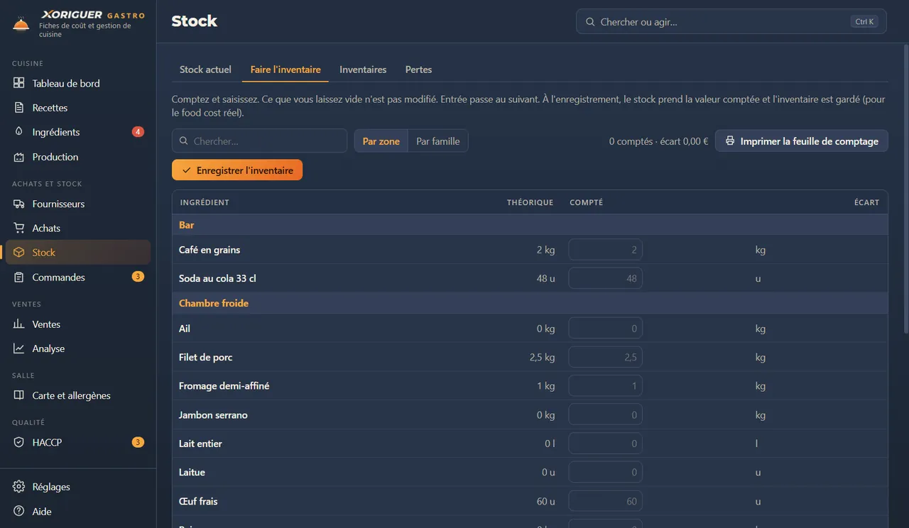
10Au quotidien : les achats
À l'arrivée d'un bon de livraison, dans Achats → Nouvel achat, choisissez le fournisseur et saisissez les produits, la quantité et le prix.
- Le stock augmente tout seul et le prix de l'ingrédient est mis à jour : tous les plats qui l'utilisent sont recalculés.
- Si un prix augmente, vous êtes prévenu avec le pourcentage.
- Les factures sans produits (électricité, loyer) peuvent être saisies avec leur seul montant, pour le compte de résultat.
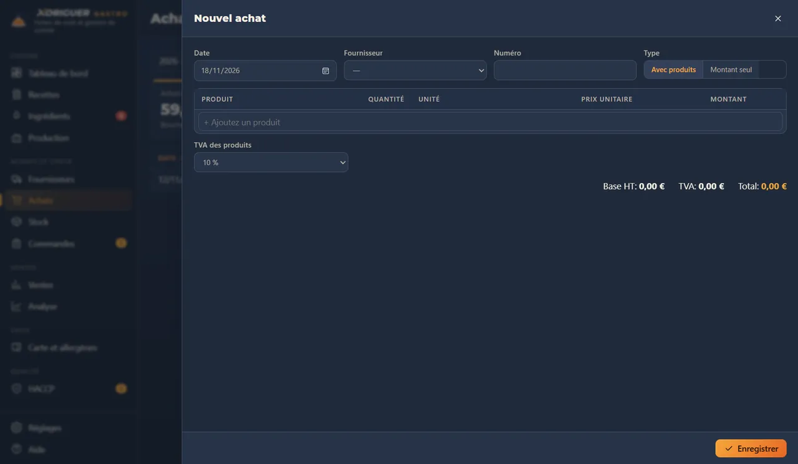
11Les commandes
Dans Commandes, la liste se crée toute seule avec ce qui est sous le minimum, regroupée par fournisseur. Ajustez les quantités, ajoutez ce que vous voulez et envoyez-la par WhatsApp ou e-mail en un clic.
À la livraison, cliquez sur Arrivé → bon de livraison : elle devient un achat.
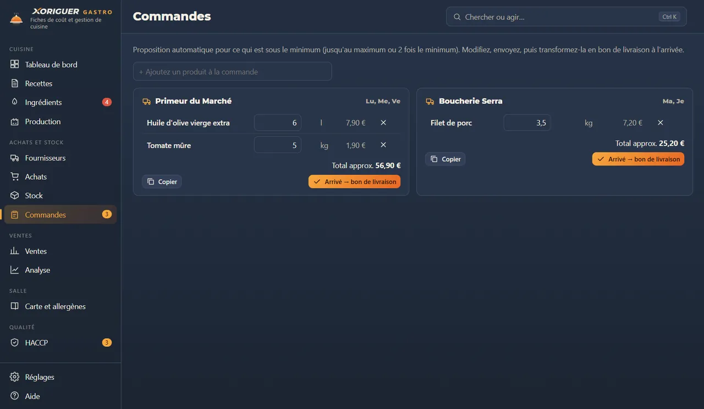
12Les ventes
Dans Ventes → Saisir les ventes, notez les unités vendues de chaque plat (avec + et − ou en tapant), ou importez-les depuis Xoriguer TPV ou un CSV de votre caisse.
Les ventes déduisent le stock selon les recettes (si vous réenregistrez le même jour, seule la différence est déduite) et alimentent toutes les analyses.
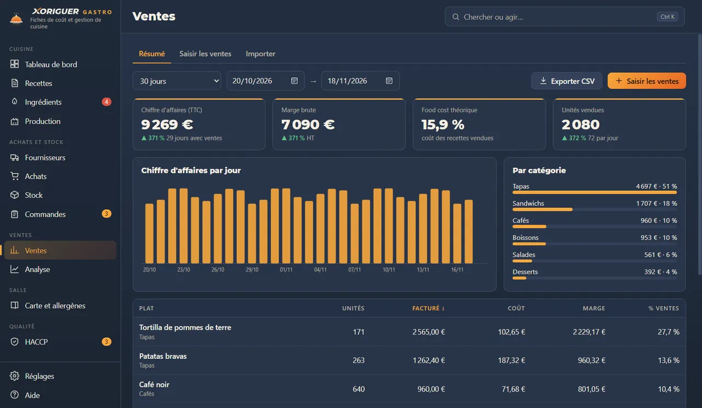
13La production
Dans Production, choisissez ce que vous voulez préparer et combien de portions (ou remplissez avec les ventes d'une semaine). Vous voyez tout ce qu'il faut, ce que vous avez et ce qui manque, à envoyer en commande d'un clic.
La feuille de production imprimée est regroupée par poste, avec les quantités de chaque recette déjà calculées (mise en place).
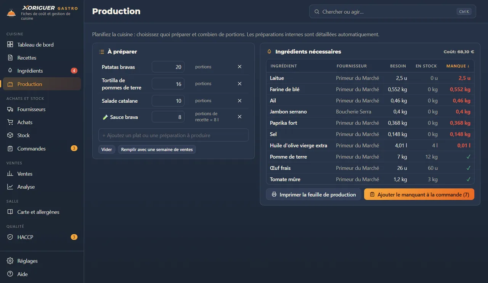
14Le tableau de bord
Le Tableau de bord est l'écran d'accueil : ventes sur 7 jours, food cost théorique, marge brute et valeur du stock, le graphique sur 30 jours et les alertes : produits épuisés ou sous le minimum, hausses de prix, plats sous la marge, ingrédients sans prix, un fournisseur moins cher, températures hors plage…
Cliquez sur une alerte pour aller droit à l'endroit où agir.
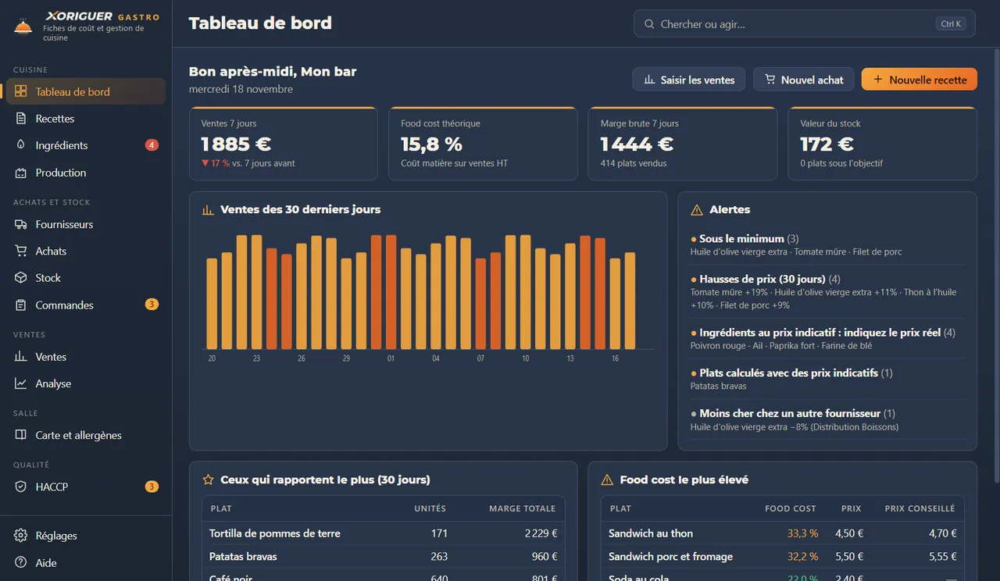
15Analyser l'activité
Dans Analyse :
- Ingénierie de menu : chaque plat est ⭐ étoile (se vend bien et rapporte), 🐴 cheval de labour, ❓ énigme ou 🐶 poids mort, avec la conduite à tenir.
- Food cost réel entre deux inventaires, comparé au théorique : l'écart vient des pertes, des portions trop grandes ou du gaspillage.
- Évolution des prix et simulateur (« si l'huile augmente de 20 %, quels plats perdent de la marge et à quel prix les vendre ? »).
- Compte de résultat avec les charges fixes et le seuil de rentabilité.
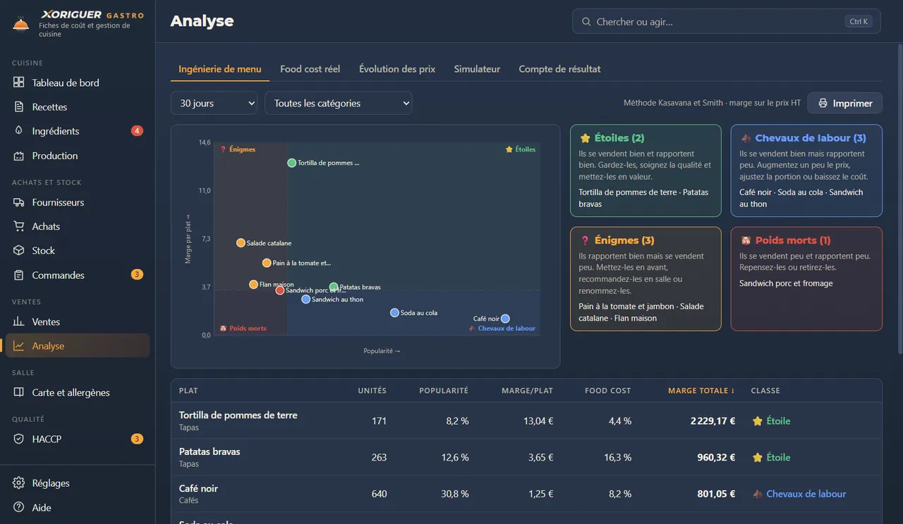
16La carte et les allergènes
Dans Carte et allergènes :
- Carte imprimable en trois styles (classique, moderne, ardoise), avec allergènes et descriptions.
- Tableau des 14 allergènes (règlement UE 1169/2011), obligatoire et calculé automatiquement d'après les recettes.
- Carte QR : enregistrez la carte numérique (une page mobile en 4 langues avec filtre d'allergènes), publiez-la sur votre site et imprimez les cartes QR pour les tables.
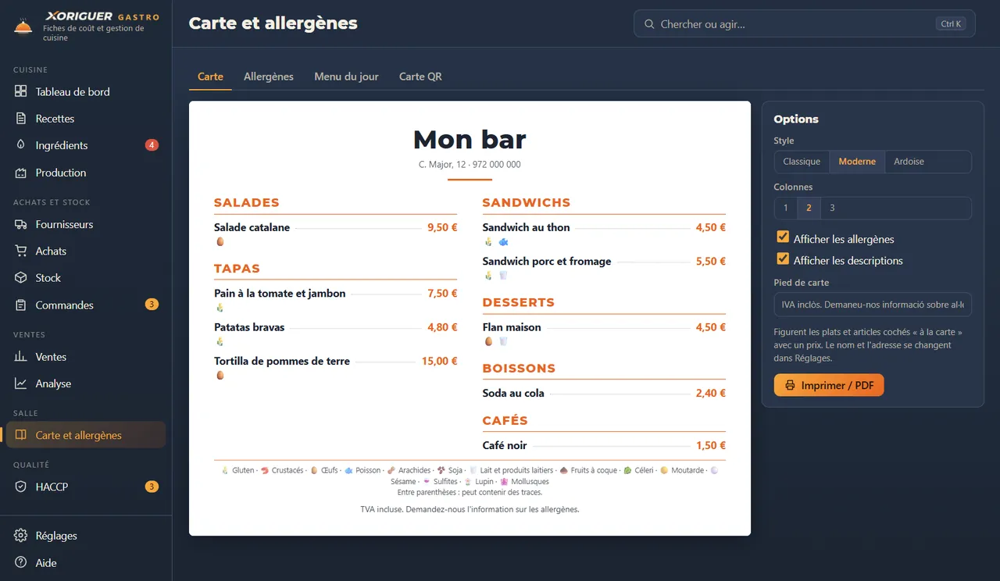
17Le menu du jour
Dans Menu du jour, saisissez entrées, plats et desserts (ou choisissez-les parmi les recettes) et le prix. Si le nom correspond à une recette, le programme calcule le coût par couvert, le food cost, la marge et le prix conseillé.
Indiquez le nombre de couverts attendus et cliquez sur Ajouter à la production : vous saurez quoi préparer et quoi acheter. Imprimez-le pour l'ardoise ou les tables.
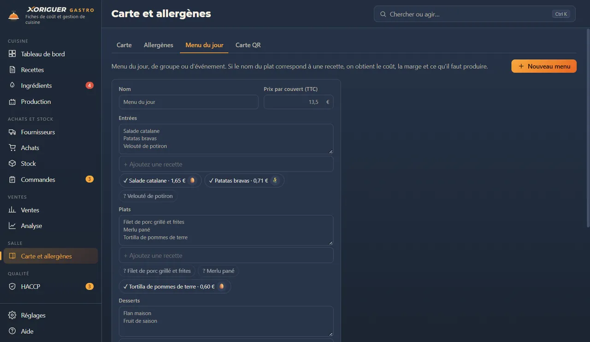
18Le HACCP
Dans HACCP, relevez chaque jour les températures des frigos et congélateurs (hors plage, une action corrective est demandée), imprimez le registre du mois pour l'inspection et créez des étiquettes de production avec date, DLC, lot et allergènes.
Dans l'onglet Équipements, ajoutez chaque frigo avec sa plage correcte.
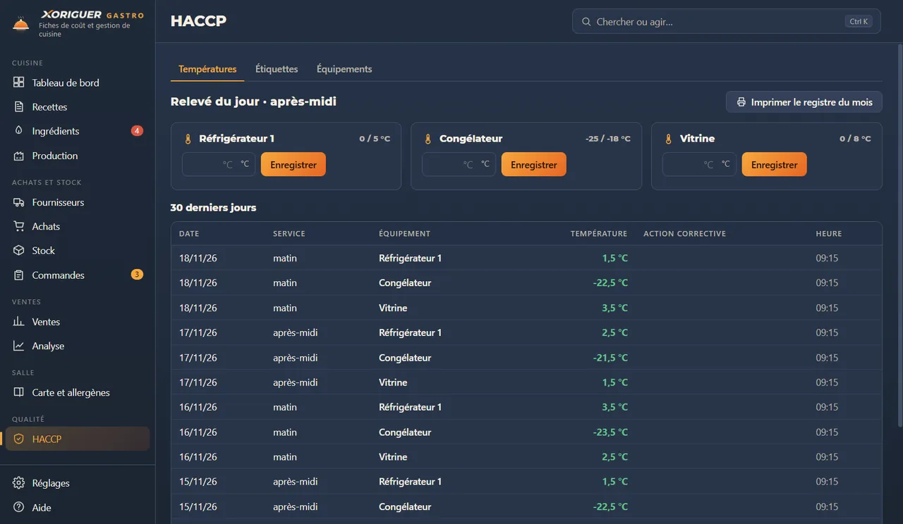
19Astuces pour aller vite
- Ctrl + K : cherchez un plat, un ingrédient ou un fournisseur, ou lancez une action (« faire l'inventaire », « nouvel achat »…).
- N : crée un nouvel élément sur l'écran en cours. / : va à la recherche.
- Ctrl + Z : annule la dernière modification (aussi depuis l'avis en bas à droite).
- Ctrl + 1…9 : change d'écran. Échap : ferme le panneau.
- Les données sont dans %APPDATA%\XoriguerGastro avec une sauvegarde automatique chaque jour (30 jours). Dans Réglages, vous pouvez en exporter ou en restaurer une.
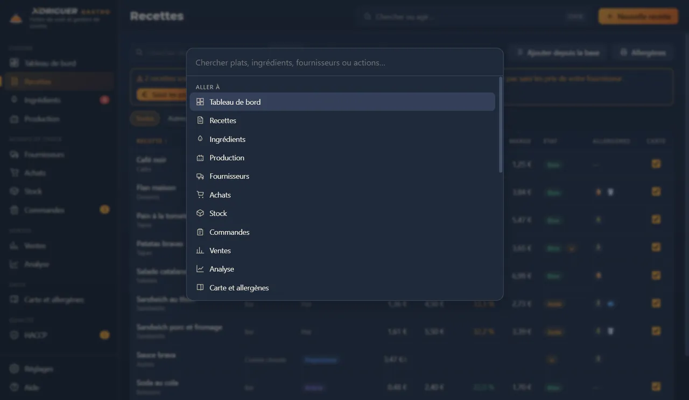
✓Liste de contrôle
- Nom, adresse, TVA et marges visées dans Réglages
- Fournisseurs créés
- Ingrédients ajoutés depuis la base ou un CSV, avec prix, fournisseur et stock minimum
- Plats ajoutés depuis la base ou créés, quantités vérifiées et prix de vente fixé
- Allergènes vérifiés (tableau imprimé visible par les clients)
- Premier inventaire fait
- Frigos et congélateurs enregistrés dans le HACCP
- Carte imprimée et/ou carte numérique avec QR sur les tables